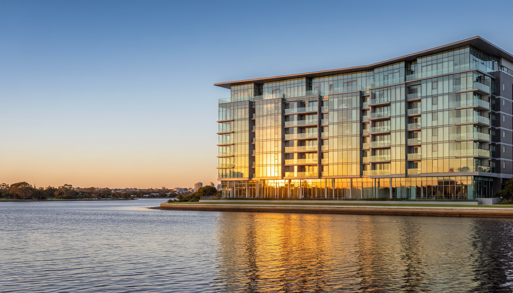
2026-09-25—2026-09-28CONFIRMED STAY
Residence on Langley Park
· Perth CBD 住宿，靠近 Langley Park 河畔。
- 入住
- 2026-09-25—2026-09-28
- 地址
- 出行
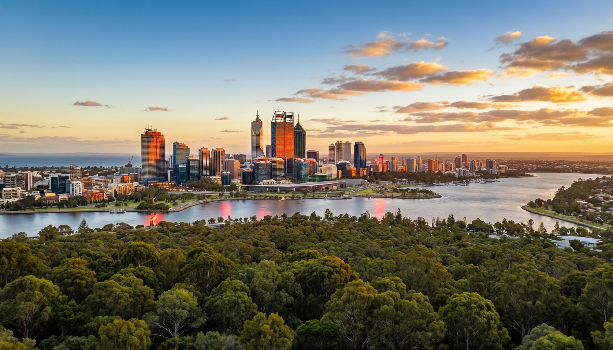
WESTERN AUSTRALIA · 11 DAYS
从珀斯城市公园到玛格丽特河巧克力工厂，沿着印度洋海岸一路向南。
珀斯的行程、住宿、餐饮与出发准备，都可以从这里继续。
TRANSPORT
所有时刻以电子客票和出发日前复核为准。
WHERE TO STAY

2026-09-25—2026-09-28CONFIRMED STAY
· Perth CBD 住宿，靠近 Langley Park 河畔。
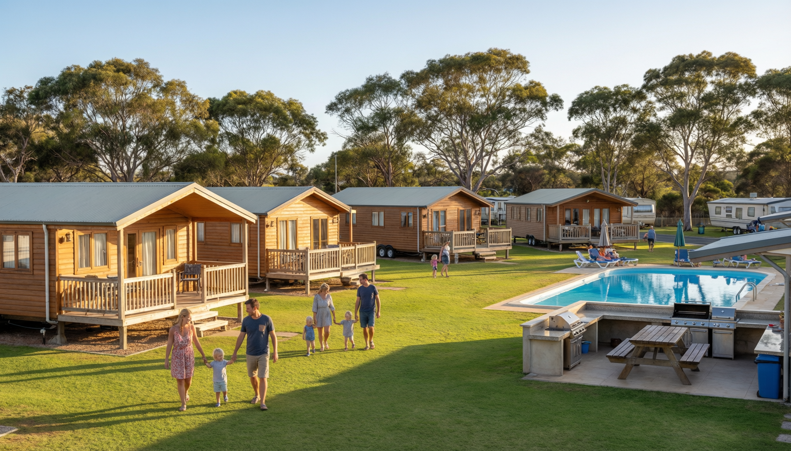
2026-09-28—2026-09-30CONFIRMED STAY
· Busselton 营地住宿，靠近 Jetty。
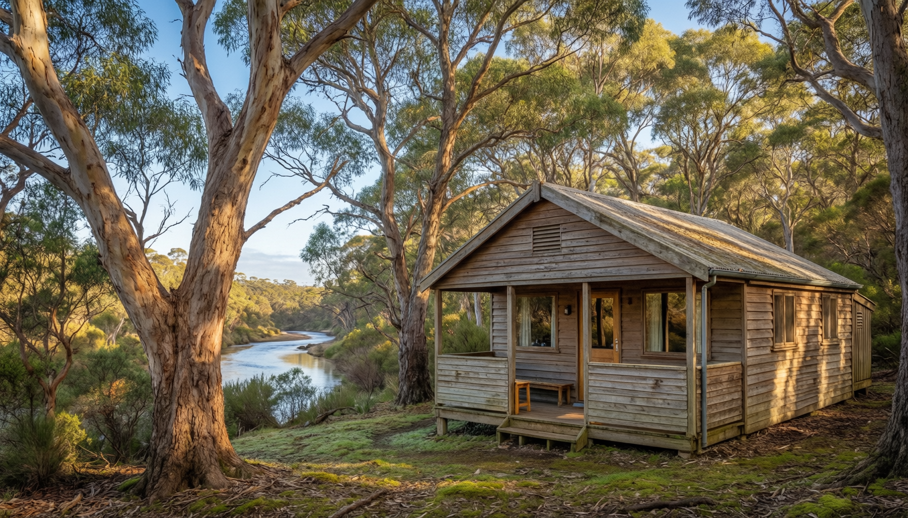
2026-09-30—2026-10-02CONFIRMED STAY
· Margaret River 河畔住宿。
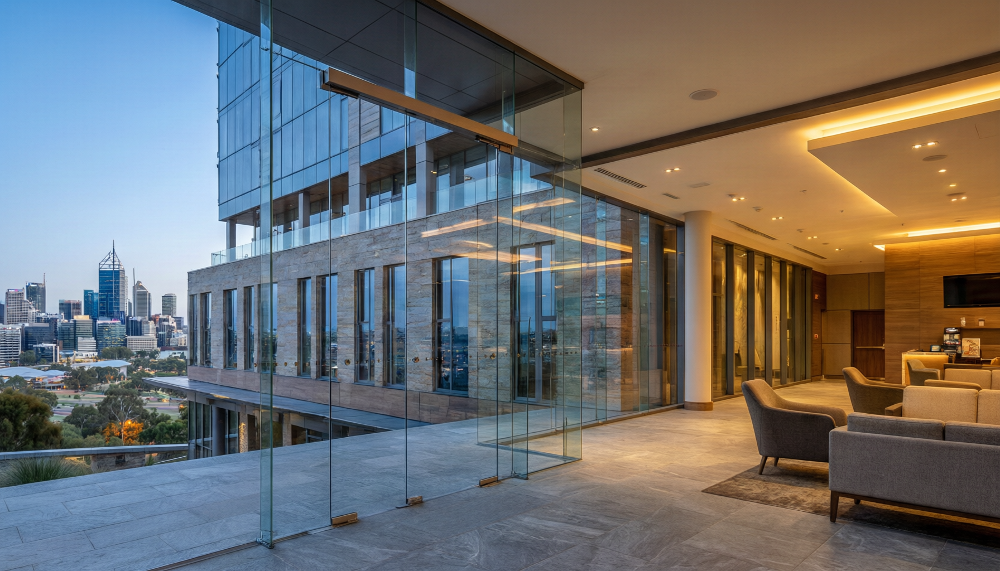
2026-10-02—2026-10-05THE ROUTE
ITINERARY
飞行中SQ225 新加坡 12:00 起飞，机上用餐休息。珀斯比新加坡同时间，不用调时差。建议起飞前在樟宜机场买好零食和水，机上物价贵。飞行约 5.5 小时，落地时当地时间约 17:10。
下午抵达与入住落地后过海关（ETA电子签自动通关，约15分钟），行李转盘出来后左转找 Transperth 火车站台。机场到市区火车约 20 分钟，或 Uber 约 AUD 35-45。到达 Residence on Langley Park 后放下行李，换上舒适衣服准备出门。
晚上河畔散步与晚餐步行 10 分钟到 Elizabeth Quay 河畔，沿 Swan River 散步看珀斯天际线日落。河边有几家餐厅可以简单吃晚餐——推荐 The Island Brewing Company 的户外座位，点一份 fish & chips 和一杯本地精酿。吃完沿 Langley Park 草地走回酒店，21:00 前入睡，明天要早起赶渡轮。
渡轮上岛 + Quokka 追踪7:30 从酒店出发，火车到 Fremantle Station（约30分钟），步行 10 分钟到 B Shed 码头。8:45 前到达候船区，有洗手间和咖啡。9:00 渡轮出发，海上约 30 分钟——出港后注意印度洋涌浪，晕船贴提前贴好。9:30 到达 Rottnest Island，下船先去 Visitor Centre 拿纸质地图（手机信号很弱）。租自行车或步行，沿着主镇 Thomson Bay 一带找 Quokka——它们最喜欢在灌木丛和房子门口晒太阳，清晨最活跃，会主动凑过来 30cm 以内，准备好前置镜头自拍。
下午The Basin 戏水 + 环岛午餐后骑车或步行 15 分钟到 The Basin——这是一个被礁石围住的天然浅水泳池，水深只到成人膝盖，非常适合孩子。水质清澈可以看到小鱼和海星。rash vest（没有遮阳处）。浮潜面镜可以在 Visitor Centre 租。15:00 开始返回主镇，沿路最后扫一遍 Quokka 照片。15:30 到达码头候船区，有小卖部可以买冰淇淋和冷饮。
晚上回程 + 早睡16:00 渡轮回 Fremantle，火车回珀斯市区。车上可以整理今天拍的 Quokka 照片。晚餐在酒店附近简单解决，推荐 Nao Tomo 拉面（Northbridge William Street，步行可达）——日式豚骨拉面份量足，孩子也爱吃。20:30 前回酒店休息，明天要取车开始自驾。
📍 今日路线图 · 总距离约 26 km
取车 + Fremantle Markets 扫街10:00 睡到自然醒退房，前往 Budget 租车取车点。取车流程约 30 分钟——检查车身划痕拍照留证、确认儿童安全座椅已装好、油表满格。10:30 取车完毕，开车约 30 分钟南下到 Fremantle。11:15 到达 Fremantle Markets（周六开放，周五日不开）。市场是 1897 年的历史建筑，里面 150+ 摊位分三个区：美食区（现做食物、果汁、咖啡）、手工艺区（本地设计、原住民艺术品）、农产品区（蜂蜜、酱料、水果）。先逛一圈，到美食区找一家坐下来吃早午餐。
下午South Beach 海滩游乐场13:30 开车 10 分钟到 South Beach Fremantle。这里有西澳最大的海边游乐场之一——旋转木马、碰碰车、摩天轮，加上旁边的浅水海滩（浪很小适合小朋友）。游乐场单次约 AUD 5-8，可以买通票。海滩边有冲脚设施、洗手间和遮阳草坪。带孩子先在沙滩玩沙 1 小时，再去游乐场，最后草坪上铺毯子休息。16:30 收拾离开，海滩日落很漂亮可以拍几张照片。
晚上Fishing Boat Harbour 晚餐开车回 Fremantle 市中心，停车在 Fishing Boat Harbour 附近。这里是 Fremantle 最热闹的晚餐区——推荐 Little Creatures Brewery，巨大的酿酒厂改造餐厅，户外露台对着港口。点一份海鲜拼盘（AUD 45-60 够 2-3 人吃）和一杯 Pale Ale（他们家的招牌）。孩子可以点 fish & chips 或 pasta。吃完沿港口散步消食，看渔船和灯光。20:30 前开车回酒店。
📍 今日路线图 · 总距离约 1 km
南下公路：Perth → Mandurah9:00 起床吃早餐，9:30 退房装车出发，沿 Kwinana Freeway 南下，约 1 小时到 Mandurah（75 公里，9:30-10:45，含出城）。这是西澳第二大城市，以运河和海豚闻名。到达后先去 Mandurah Foreshore——河畔有大片绿地、儿童游乐场（免费）和 BBQ 烧烤台。运气好的话在河口可以看到野生海豚跃出水面（全年都有，9月概率更高）。如果孩子精力旺盛，可以去旁边的 Dolphin Quay 码头走走。可选：参加 Dolphin Cruise（约 1 小时，AUD 35/成人），需要提前在官网预订。
下午Bunbury 午餐 + Koombana Bay12:15 离开 Mandurah，继续南下约 45 分钟到 Bunbury（50 公里，西澳第三大城市）。13:00 到 Koombana Bay 海滩——这里以野生海豚闻名，Dolphin Discovery Centre 就在旁边（可以花 10 分钟看看展览）。海滩边有 Grass Roots Cafe 可以吃午餐（汉堡和沙拉为主，AUD 15-25/人）。吃完让孩子在沙滩跑一跑，大人喝杯咖啡。14:00 出发前往 Busselton，车程约 40 分钟（45 公里）。
晚上Busselton 入住 + 营地探索14:45 到达 Discovery Parks Busselton，15:30 前完成入住。先熟悉营地设施：室内温水泳池（孩子会想马上跳进去）、儿童游乐场、BBQ 区、小卖部。营地离 Busselton Jetty 约 5 分钟车程，傍晚可先去 Jetty 起点踩点看日落，为明天的小火车行程探路。小木屋有完整厨房——如果之前在超市买了食材，晚上可以在营地 BBQ 区烤肉（免费使用，先到先得）或回木屋自己做晚餐。营地有洗衣房（投币 AUD 4/次），可以趁这个机会洗一下前几天的衣服。
📍 今日路线图 · 总距离约 134 km
Busselton Jetty 小火车 + 水下世界9:00 起床，在营地附近吃早餐。9:30 开车 5 分钟到 Jetty 停车场（免费）。Busselton Jetty 是南半球最长的木栈桥（1841米），从岸上一直延伸到海中央。10:00 乘坐红色小火车（Jetty Train）出发，单程约 15 分钟，沿途讲解 Jetty 百年历史。到达尽头后进入水下观测站（Underwater Observatory）——乘电梯下到海面以下 8 米，透过玻璃窗看珊瑚、热带鱼和鲨鱼。孩子会非常兴奋。整个参观约 45 分钟。回程可以走路回来（约 25 分钟，沿栈桥看海景）或再坐小火车。
下午Foreshore 沙滩 + 游乐场11:30 回到岸边，步行 5 分钟到 Busselton Foreshore。这里有一大片人工沙滩和儿童水上游乐场（免费，喷水设施夏季 10:00-17:00 运行）。旁边有 Geographe Bay 的平静海面——水浅且无浪，像天然儿童泳池。午餐可以在 Foreshore Cafe 吃（汉堡和三明治，AUD 15-20），或吃从营地带来的便当。下午就在沙滩和游乐场消磨时光，大人轮流去旁边的 Busselton 镇中心逛逛（有 IGA 超市和小店）。
晚上营地晚餐 + 观星16:30 返回 Discovery Parks。今晚在营地做晚餐——小木屋厨房有完整设备，如果昨天在 Woolworths Busselton 买了食材可以直接烹饪。推荐简单做：超市买的牛排 + 沙拉 + 意面。吃完在营地散步，Busselton 光污染少，天气好可以看到银河。营地有篝火坑（需自带木柴，小卖部有卖），可以烤棉花糖。21:00 前回屋休息。
📍 今日路线图 · 总距离约 2 km
巧克力工厂甜蜜之旅9:30 退房，开车 30 分钟到 Margaret River Chocolate Company（位于 Treeton 路上，不在镇中心）。这是西澳最著名的手工巧克力工厂——进门就能闻到浓郁的可可香。免费参观巧克力制作过程（透过玻璃窗看工人手工调温、灌模、包装），然后到品鉴区免费试吃 5-6 种口味。推荐买：Dark Orange（黑巧橙味）、Peppermint Cream 和 Rocky Road 礼盒装。工厂旁边有咖啡吧，可以坐下来喝一杯 hot chocolate（AUD 6-8，浓郁到像融化的巧克力棒）。给孩子买一个巧克力棒棒糖，他们会在工厂门口的大草坪上跑得停不下来。
下午迷宫探险 + 午餐11:00 开车 10 分钟到 Amaze'n Margaret River。这里有三个迷宫（ hedge maze 树篱迷宫 + 水上迷宫 + 儿童小迷宫）和一个大型儿童冒险乐园（攀爬架、滑梯、蹦床）。迷宫不算太难，大人走约 20-30 分钟，但孩子可能更久因为会被岔路吸引。冒险乐园有软垫区适合幼儿。午餐在园区内的 Cafe 吃（三明治和沙拉，AUD 12-18），或吃自带便当。园区无遮阳处较多，务必涂防晒和戴帽子。注意：Amaze'n 仅周末和学校假期开放——如果 9/30 周三不在假期内则跳过，改去 Margaret River 镇中心的河流步道散步。
晚上Margaret River 小镇晚餐14:30 到达 Adamsons Riverside 办理入住。休息一会后，17:30 开车 3 分钟到 Margaret River 镇中心。推荐 Margaret River Brewing Company（Brew Haus）——精酿啤酒 + 本地食材做的汉堡和拼盘。户外花园座位有灯串装饰，氛围很好。推荐点：The Big Kahuna 汉堡（AUD 22）配一杯 Pale Ale。孩子可以点 chicken tenders 或 pasta。如果不想在外面吃，也可以在 Coles 买食材回 Adamsons 自己做（厨房有炉灶和微波炉，取决于房型）。
📍 今日路线图 · 总距离约 7 km
Dunsborough 观鲸出海6:30 起床，7:00 从 Adamsons 出发开车 30 分钟到 Dunsborough 码头。7:45 到达，办理登船手续。8:00 准时出海——9-10月是座头鲸南迁季节，它们会带着幼鲸在 Geographe Bay 近岸休息和哺乳，距离海岸有时只有几百米。船开到观鲸点约 20 分钟，之后 2 小时在鲸鱼附近低速巡航观赏。运气好能看到鲸鱼跃出水面（breaching）、拍尾（tail slapping）和母子同游。船上有讲解员用中英文介绍鲸鱼知识。11:00 返回码头。务必穿防风外套（海上体感低 5°C），晕船贴提前贴好。
下午Cape Naturaliste 灯塔 + 海岸步道11:30 在 Dunsborough 镇上的 Beach Cafe 吃午餐（海鲜沙拉和手工咖啡，AUD 18-25）。12:30 开车 15 分钟到 Cape Naturaliste Lighthouse——西澳最南端的灯塔之一，建在 100 米高的悬崖上。13:00 参加灯塔导览（约 30 分钟），登到灯塔顶部俯瞰印度洋——天晴时能看到 50 公里以外的海岸线。导览结束后走 Cape to Cape Track 的短途段（约 30-40 分钟往返），沿悬崖步道看海蚀洞和野花。9-10月是西澳野花季，步道两旁有各种颜色的野花。注意安全：悬崖边没有护栏，看管好儿童。
晚上Dunsborough 小镇晚餐17:00 回到 Dunsborough 镇中心。推荐 The Common Kitchen——海景露台餐厅，以当地新鲜食材著称。推荐：Grilled Barramundi（澳洲肺鱼，AUD 32）或 Lamb Shank（AUD 28），配一杯 Margaret River 产区的 Shiraz。露台看日落非常美。如果不想吃大餐，Dunsborough 镇上也有 Thai、Pizza 和 Fish & Chips 等平价选择。20:00 前开车回 Margaret River 住宿（30分钟）。
📍 今日路线图 · 总距离约 20 km
退房北上：丛林公路9:00 起床吃早餐（自己做或去镇上 Cafe）。10:00 退房，逐一检查房间（充电口、枕头下面、洗手间）。沿 Bussell Highway 北上回珀斯，全程约 3 小时但不赶路——这条公路穿过西澳的桉树林和农田，风景很澳洲。途中可以在 Bunbury 的 BP 加油站休息上厕所。11:00 到达 Waroona 镇附近。
下午Drakesbrook Weir 丛林秘境12:00 到达 Drakesbrook Weir——这是藏在丛林深处的一个人工水坝，形成了一个天然浅滩泳池。水质清澈见底，可以看到鹅卵石和小鱼。水深处约 1 米（成人腰部），浅处只有脚踝深，非常适合孩子戏水。周围是高大的桉树林，阳光透过树冠洒下来，很有丛林探险的感觉。岸边有 BBQ 烧烤台（免费）、野餐桌椅和洗手间。午餐吃自带便当（从 Adamsons 带出来的）或在 Waroona 镇上的 Bakery 买 pie（AUD 5-8，澳洲肉派，孩子很爱吃）。14:00 继续北上。
晚上珀斯市区入住 + Northbridge 晚餐16:00 到达 Four Points by Sheraton Perth，办理入住。酒店在 CBD 边缘，停车费约 AUD 25-35/天（确认酒店是否有住客优惠）。休息一会后，步行 10 分钟到 Northbridge 区吃晚餐——这是珀斯最多元的饮食区，William Street 和 James Street 交叉口聚集了各国餐厅。推荐 Nao Tomo（日式拉面，AUD 18-22，排队常见但值得）或 Try Thai（泰式，AUD 20-30，冬阴功汤很正宗）。吃完在 Northbridge 的酒吧街感受一下珀斯的夜生活氛围。
📍 今日路线图 · 总距离约 249 km
Araluen 郁金香节（或 Caversham 动物园）9:00 起床吃早餐，9:30 出发，开车 40 分钟到 Araluen Botanic Park。9-10月是年度郁金香节（Tulip Festival），超过 15 万株郁金香盛开，红黄粉紫铺满整个山谷。买票入场后沿溪流步道走（平缓，推车也能走），两边是郁金香花坛和日本花园。孩子可以在草坪上跑，大人拍照拍到停不下来。建议 9:30 开门就到，人少光线好。园内有小火车（AUD 5/人，绕园一圈 15 分钟）和咖啡馆。备选：如果更喜欢动物，去 Caversham Wildlife Park（车程 20 分钟）——可以抱考拉拍照（AUD 30）、喂袋鼠、看鸭嘴兽。11:00 有饲养员喂食表演，建议提前 15 分钟到占前排位置。
下午Watertown 奥特莱斯购物12:00 离开花园/动物园，开车 15 分钟到 Watertown Brand Outlet Centre。这是珀斯最大的品牌折扣中心，汇聚 Nike、Adidas、Calvin Klein、Tommy Hilfiger、Cotton On Kids 等 100+ 品牌，折扣通常 30-70% off。午餐在美食区解决（各种快餐和咖啡）。建议提前列好购物清单，否则容易逛到关店。重点推荐：Cotton On Kids（儿童服装折扣力度大）、Nike Factory Store（运动鞋断码清仓）、Kitchenware 店（可以买澳洲品牌的厨具当伴手礼）。单店购物满 AUD 300 保留发票，10/5 机场可以退税。
晚上Northbridge 亚洲风味晚餐17:30 开车回酒店停车，步行去 Northbridge。今晚吃亚洲菜换换口味——推荐 Old Shanghai Dumpling House（小笼包和生煎，AUD 15-20/人）或 Good Fortune Co（港式烧腊饭，AUD 12-18，叉烧和烧鸭很正宗）。Northbridge 的唐人街氛围很浓，有不少华人开的餐厅，口味接近新加坡水平。吃完沿 Roe Street 散步回酒店。
📍 今日路线图 · 总距离约 47 km
Kings Park 城市绿洲 + Naturescape9:30 退房，开车到 Budget 市区还车点（约 15 分钟），10:00 还车完毕。之后打车约 15 分钟到 Kings Park（10:45 到达）——占地 400 公顷的城市公园，比纽约中央公园还大。先走 Fraser Avenue（两侧是百年桉树大道），到达战争纪念碑（State War Memorial），俯瞰整个珀斯天际线和 Swan River，这是拍全家福的最佳地点。然后去西澳植物园（Western Australian Botanic Garden），9-10月野花季各种本地花卉盛开。12:00 前往 Rio Tinto Naturescape Kings Park——这是一个鼓励孩子亲近自然的探索乐园：有泥坑水道（可以踩水玩泥巴）、树屋攀爬架、沙坑和丛林小径。孩子会玩到不想走。务必带换洗衣物和毛巾（会弄湿弄脏）。
下午CBD 最后采购 + 梵克雅宝13:15 在 Kings Park 内的 Botanical Cafe 吃午餐（三明治和沙拉，AUD 15-20，露台看公园景色）。14:15 打车/公交回市区，步行逛 Hay Street Mall 和 Murray Street Mall——珀斯主要购物街，有 Myer、David Jones 百货和各种品牌店。15:00 前往 Van Cleef & Arpels 珀斯精品店（352 Murray Street），周日 11:00-17:00 营业。店内支持普通话服务，可以看 Vintage Alhambra 四叶草系列和 Perlée 金珠系列。澳洲定价通常比国内低 15-25%，加上退税更划算。16:00 去 Woolworths/Coles 做最后的伴手礼采购（Tim Tim、坚果等）。
晚上Elizabeth Quay 告别晚餐18:00 步行到 Elizabeth Quay 的 The Reveley 餐厅——这是珀斯最受推荐的河畔餐厅之一，户外露台正对 Swan River 和城市灯光。点一份海鲜拼盘（AUD 65-85，够 2-3 人）或 Barramundi（澳洲肺鱼，AUD 35），配 Margaret River 产区的 Chardonnay。日落时分河面金光闪闪，是整趟旅行最完美的收尾。吃完沿 Quay 散步消食，看灯光倒映在水面上。21:00 前回酒店，收拾行李准备明天早班机。
📍 今日路线图 · 总距离约 3 km
退房 + 机场退税6:00 起床，最后检查房间（枕头下、充电口、洗手间架子、行李箱夹层）。6:30 退房，Uber 或酒店叫车前往珀斯机场（约 20 分钟，AUD 30-40）。7:00 到达机场国际出发大厅。先去 TRS（Tourist Refund Scheme）退税柜台——在安检前找到 ABF 办公室，出示护照、登机牌和购物发票（单店满 AUD 300 的原始发票，不接受信用卡收据）。退税金额约 GST 10%，通常退到信用卡（2-4周到账）或现金。8:00 过安检和海关，珀斯机场不大，过关很快。8:30 到达登机口，免税店最后扫一眼（推荐买：Tim Tam 大包装、Jurlique 护肤品、Manuka 蜂蜜）。
下午飞行回新加坡SQ226 09:55 起飞，飞行约 5.5 小时。机上可以补觉、整理照片或写旅行日记。15:15 抵达樟宜机场（新加坡时间同珀斯时间，无时差）。过海关后取行李，搭地铁或打车回家。西澳 11 天之旅圆满结束。
晚上飞行中SQ226 珀斯 10:30 起飞，回新加坡。机上约 5.5 小时，抵达樟宜约 15:40 当地时间。建议提前在机场免税店买好伴手礼（Tim Tam、澳洲坚果等），机上选择有限。落地后过关取行李，回家休息。
SIGHTS

Perth 近海小岛，以短尾矮袋鼠 (Quokka) 闻名。岛上有多个海湾、灯塔和自行车道，适合一日游。从 Fremantle B Shed 乘船约 30 分钟到达。
开放全天开放，渡轮首班约 7:00，末班约 17:00 · ['无固定休息日']
Google Maps ↗官网 ↗
Rottnest Island 主镇所在海湾，码头、餐饮和游客中心集中于此。适合游泳和浮潜。
开放全天 · ['无固定休息日']
Google Maps ↗官网 ↗
Rottnest Island 标志性岩石泳池，天然围合的浅水区，适合家庭戏水。从主镇步行约 15 分钟。
开放全天 · ['无固定休息日']
Google Maps ↗官网 ↗
始于 1897 年的历史市场，汇集本地农产品、手工艺品和街头美食。仅周五、周六、周日开放。
开放Fri 9:00-21:00, Sat-Sun 9:00-18:00 · ['无固定休息日']
Google Maps ↗官网 ↗
Fremantle 南岸家庭友好海滩，配有大型游乐场、野餐区、草坪、烧烤设施和浅水游泳区。
开放全天 · ['无固定休息日']
Google Maps ↗官网 ↗
南半球最长木栈桥 (1.8km)，可乘小火车到尽头，参观水下观测站近距离观赏丰富海洋生物。
开放Jetty Train 9:00-17:00; Observatory 9:30-16:30 · ['无固定休息日']
Google Maps ↗官网 ↗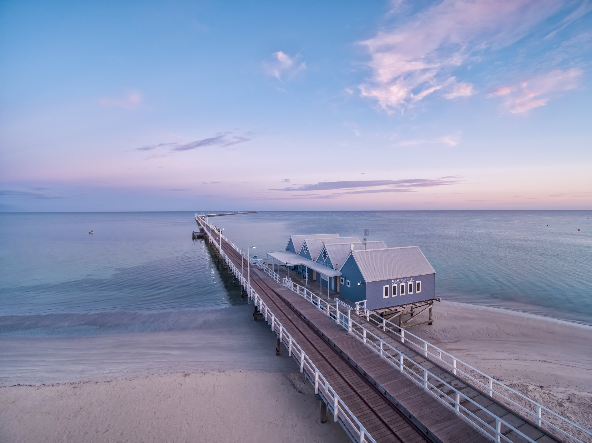
位于 Jetty 尽头水面以下 8 米，透过玻璃窗观察珊瑚礁和 300+ 种海洋生物。需购买 Jetty Train + Observatory 联票。
开放9:30-16:30 · ['无固定休息日']
Google Maps ↗官网 ↗
免费品尝手工巧克力，参观巧克力制作过程。位于 Treeton，距 Margaret River 镇约 10 分钟车程。
开放9:00-17:00 daily · ['无固定休息日']
Google Maps ↗官网 ↗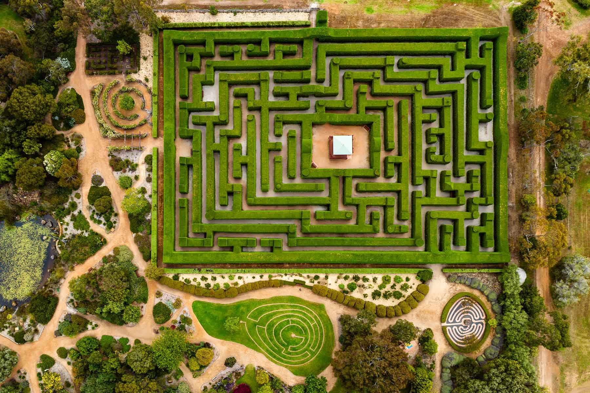
大型树篱迷宫、儿童游乐场、农场动物区、迷你高尔夫、野餐区、咖啡厅和纪念品商店。适合家庭半日游。
开放10:00-17:00 (school holidays & weekends); closed weekdays term time · ['无固定休息日']
Google Maps ↗官网 ↗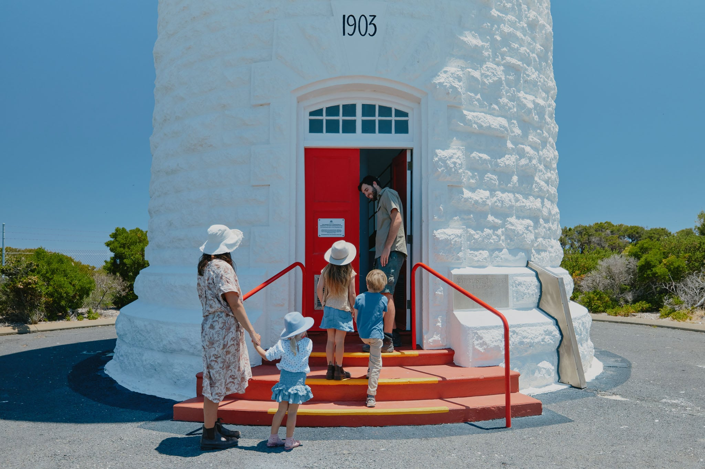
建于 1904 年的花岗岩灯塔，可参加导览登塔俯瞰印度洋。周边有 Cape to Cape Track 步道。
开放Tours 10:00-15:30 daily · ['无固定休息日']
Google Maps ↗官网 ↗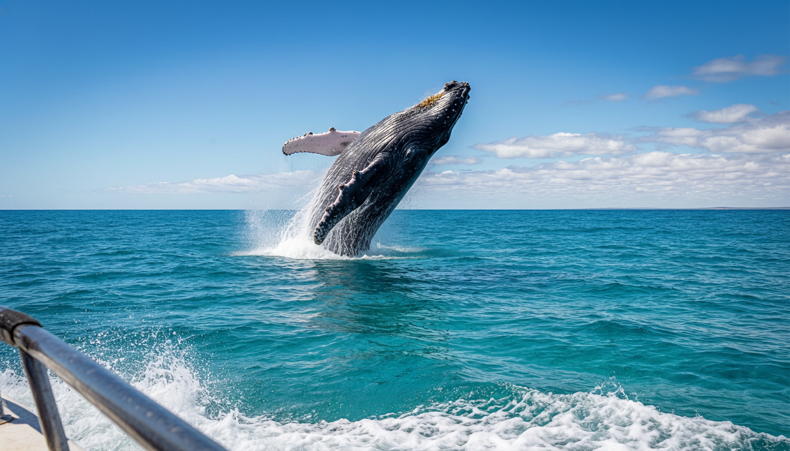
9-10月为座头鲸迁徙季，从 Dunsborough 出海观赏鲸鱼。多家运营商提供 2-3 小时船程。
开放Seasonal Sep-Nov; tours typically 8:00-13:00 · ['无固定休息日']
Google Maps ↗官网 ↗
占地 400 公顷的大型城市公园，包含西澳植物园、战争纪念碑和城市天际线观景点。免费入园。
开放Park 24hr; Botanic Garden 9:00-17:00 · ['无固定休息日']
Google Maps ↗官网 ↗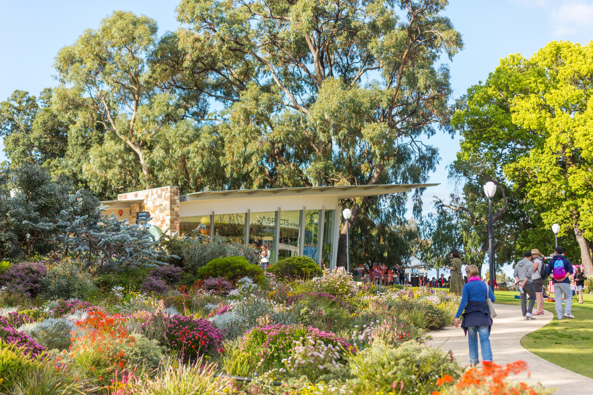
Kings Park 内的自然探索乐园，儿童可攀爬原木、挖沙、建水坝和探索丛林。鼓励脏玩。
开放9:00-17:00 · ['无固定休息日']
Google Maps ↗官网 ↗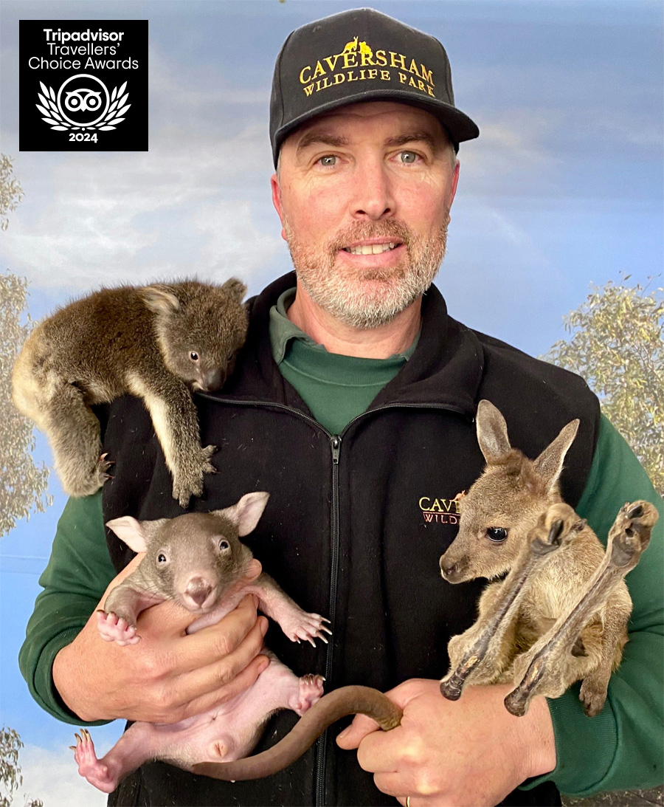
位于 Whiteman Park 内，可与考拉、袋鼠近距离互动。每日有喂食表演和拍照体验。
开放9:00-17:00 daily · ['无固定休息日']
Google Maps ↗官网 ↗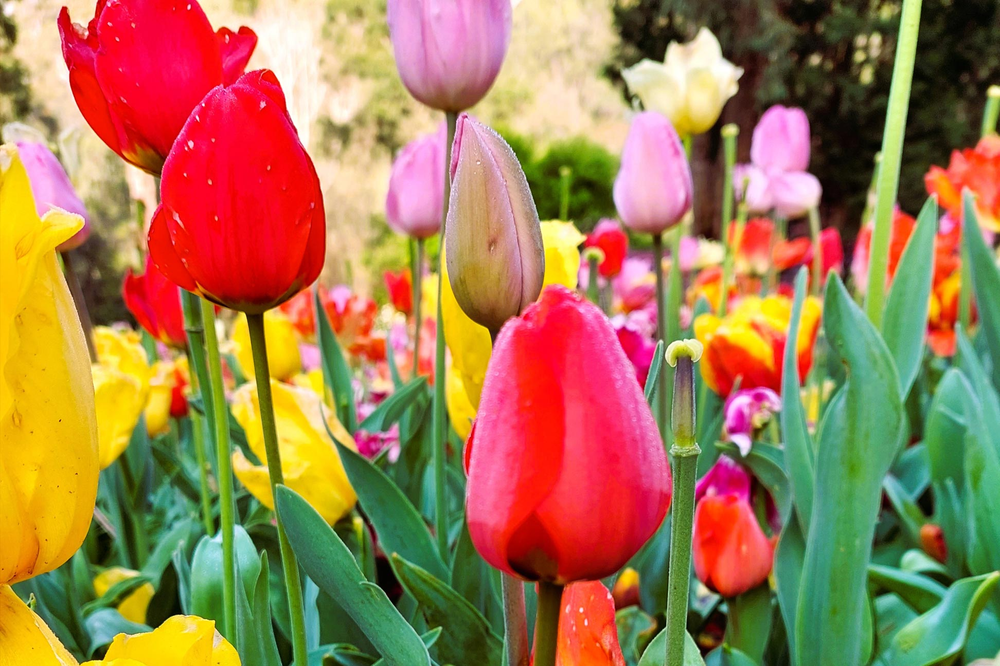
Perth 山区花园，9-10月举办郁金香节 (Tulip Festival)。有溪流步道和野餐区。
开放9:00-17:00 (extended during Tulip Festival) · ['无固定休息日']
Google Maps ↗官网 ↗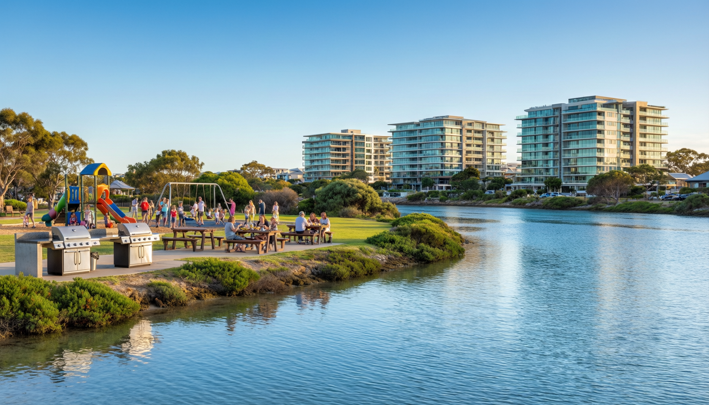
Mandurah 河畔休闲区，有儿童游乐场、野餐区、草坪和海豚出没水域。可参加海豚观赏游船。
开放全天 · ['无固定休息日']
Google Maps ↗官网 ↗
Bunbury 主海滩，平静浅水区适合家庭。附近有 Dolphin Discovery Centre。
开放全天 · ['无固定休息日']
Google Maps ↗官网 ↗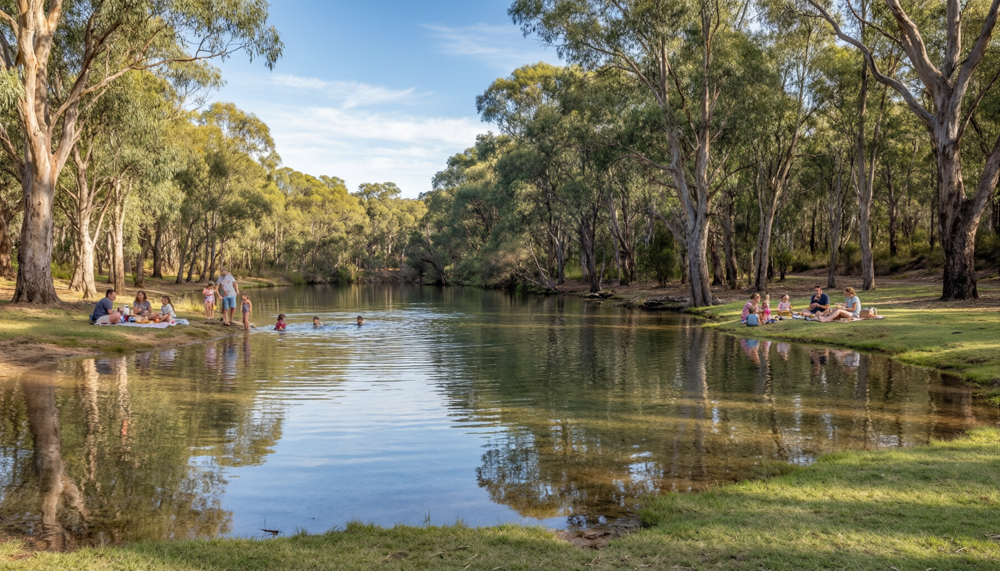
Waroona 附近的丛林水坝，有浅滩戏水区、野餐设施和林间步道。是回程路上的理想休息站。
开放全天 · ['无固定休息日']
Google Maps ↗官网 ↗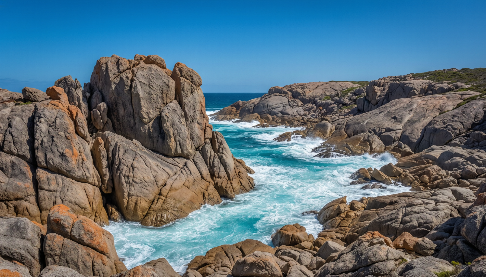
Yallingup 附近的天然岩石水道，海浪涌入形成壮观水景。设有观景台和沿海短步行步道。
开放全天 · ['无固定休息日']
Google Maps ↗官网 ↗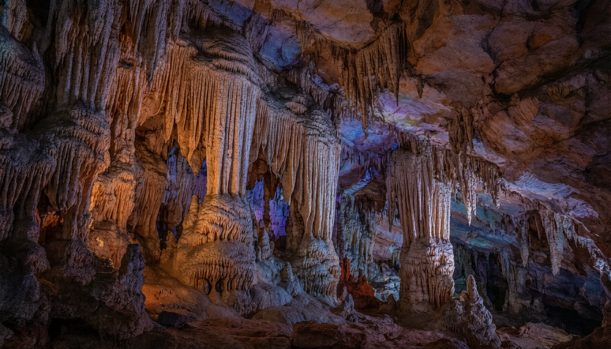
Yallingup 地下溶洞，有导览讲解钟乳石形成。约 45 分钟行程，全年恒温 18°C。
开放Tours 10:00-15:00 daily · ['无固定休息日']
Google Maps ↗官网 ↗SHOPPING

始于 1897 年的历史市场，汇集本地农产品、手工艺品和街头美食。
值得逛 / 买['本地蜂蜜', '手工艺品', '街头美食']
本地手工艺品和特产食品最佳，价格中等偏上。开放：Fri 9:00-21:00, Sat-Sun 9:00-18:00 · ['Mon', 'Tue', 'Wed', 'Thu']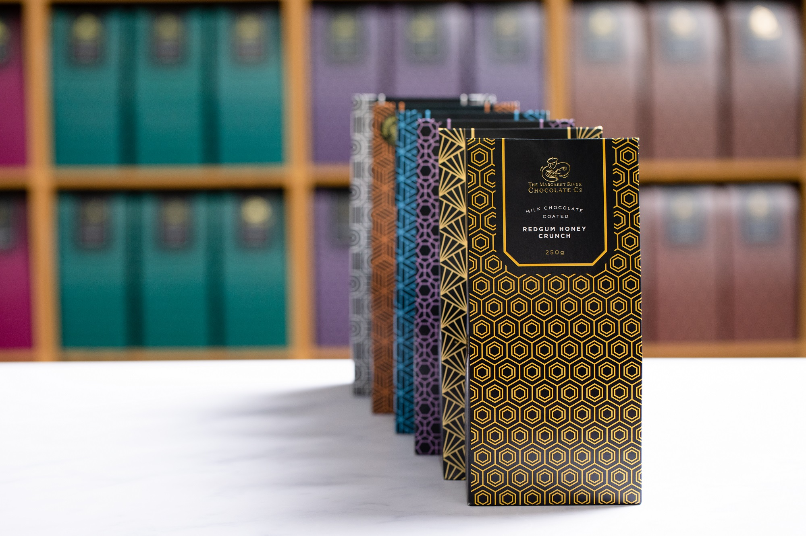
工厂直营店，手工巧克力和礼盒。免费试吃。
值得逛 / 买['手工松露', '礼盒装', '季节限定口味']
免费试吃后可购买，礼盒装适合送人。价格 AUD 10-30。开放：9:00-17:00 daily · ['无固定休息日']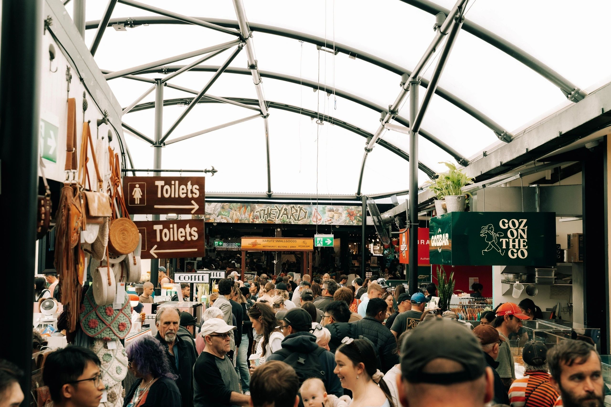
澳洲原住民传统点画和当代艺术品。
为什么值得买独特的澳洲文化纪念品，具有收藏价值。
适合送给自用收藏、送艺术爱好者
哪里买：Fremantle Markets, Perth CBD galleriesAUD 20-200+，确认是否附带真品证书。
西澳知名手工巧克力，工厂直营。
为什么值得买免费试吃后选购，品质上乘，包装精美。
适合送给送朋友同事、自用
哪里买：Margaret River Chocolate CompanyAUD 10-30，礼盒装更适合送礼。Rottnest Island 短尾矮袋鼠纪念玩偶。
为什么值得买Rottnest Island 标志性纪念品，可爱且独特。
适合送给送小孩、自用
哪里买：Rottnest Island gift shop, Perth souvenir storesAUD 15-35，岛上选择更多。LOCAL EXPERIENCES
9-10月座头鲸迁徙季从 Dunsborough 出海，2-3小时船程可近距离观赏鲸鱼和海豚。西澳最佳观鲸点之一，成功率极高。
开放Seasonal Sep-Nov; tours 8:00-13:00 · ['无固定休息日']

Rottnest Island 是短尾矮袋鼠 (Quokka) 的主要栖息地，这种"世界上最快乐的动物"随处可见。骑行或步行均可偶遇，主镇周边尤其密集。
开放全天 (清晨和傍晚最活跃) · ['无固定休息日']

免费品尝数十种手工巧克力，透过玻璃窗观看巧克力制作全过程。游客可以选购精美礼盒装带走，是西澳最受欢迎的亲子美食体验之一。
开放9:00-17:00 daily · ['无固定休息日']

1904年花岗岩灯塔，导览登塔可俯瞰印度洋壮阔海岸线。周边 Cape to Cape Track 步道适合短途徒步，观鲸季还可远眺鲸鱼。
开放Tours 10:00-15:30 daily · ['无固定休息日']

乘坐复古小火车沿南半球最长木栈桥 (1.8km) 行驶至尽头，配合水下观测站参观海洋生态。适合家庭出游，车上有详细讲解。
开放9:00-17:00 · ['无固定休息日']

大型树篱迷宫配合儿童冒险乐园和农场动物区。迷宫适合各年龄段来挑战，儿童区有攀爬设施、滑梯和沙坑。是家庭半日游的首选目的地。
开放10:00-17:00 (holidays & weekends) · ['Mon', 'Tue', 'Wed', 'Thu', 'Fri']
FOOD GUIDE
澳洲国民巧克力饼干，多种口味可选，Double Coat 和 Chewy Caramel 最受欢迎
澳洲酵母酱，薄涂在吐司上配黄油食用，味道咸鲜独特
椰丝巧克力海绵蛋糕块，传统澳式甜点，口感松软适合儿童
澳洲春卷，油炸蔬菜肉卷外酥里嫩，跟中式春卷完全不同
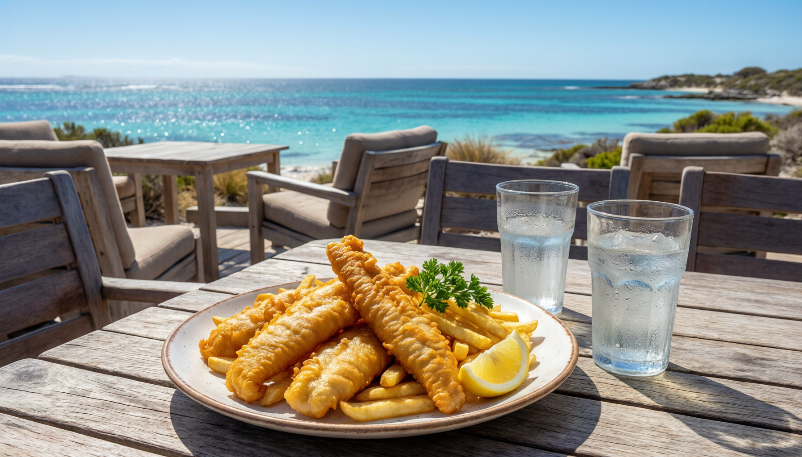
Seafood & Burgers ·
招牌：Fish & Chips · Rotto Burger · Grilled Barramundi
第 2 天 · 已安排
为什么值得去Rottnest Island 上最受欢迎的休闲餐厅，海鲜和汉堡为主，户外座位可看海景。岛上午餐首选。
营业11:00-15:00 · ['无固定休息日']

Street Food ·
招牌：西班牙油条 · 烤肉串 · 手工冰淇淋
第 3 天 · 已安排
为什么值得去市场内的美食区汇集各国街头小吃，从亚洲面食到地中海烤肉，边逛边吃是 Fremantle 的经典体验。
营业Fri 9:00-21:00, Sat-Sun 9:00-18:00 · ['Mon', 'Tue', 'Wed', 'Thu']
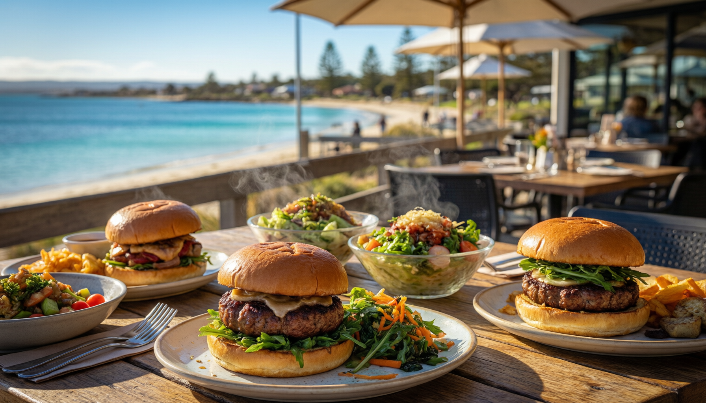
Australian Modern ·
招牌：Fish & Chips · Steak Sandwich · Kids Menu
备选 · 按区域顺路加入
为什么值得去Busselton 河畔的家庭友好餐厅，设有儿童游乐区，提供西式简餐和本地新鲜海鲜。晚餐时段可欣赏河畔日落美景，适合全家共享。
营业12:00-21:00 · ['无固定休息日']

Pizza & Craft Beer ·
招牌：Wood-fired Pizza · Tasting Paddle · Kids Pizza
第 6 天 · 已安排
为什么值得去本地精酿啤酒厂餐厅，拥有宽阔大草坪和儿童游乐区，非常适合家庭聚餐。招牌木火披萨现烤出炉，搭配一杯本地精酿啤酒是绝佳享受。
营业11:30-20:00 · ['无固定休息日']
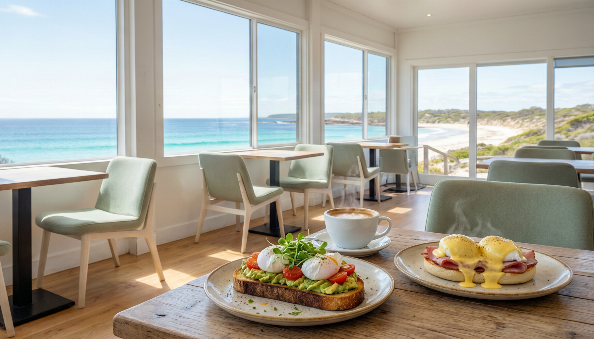
Cafe ·
招牌：Big Breakfast · Avocado Toast · Smoothie Bowl
第 7 天 · 已安排
为什么值得去Dunsborough 主街上的海滩咖啡馆，以丰盛早餐和轻食为主，是观鲸之旅出发前补充能量的理想地点，咖啡品质也值得一试。
营业7:00-15:00 · ['无固定休息日']
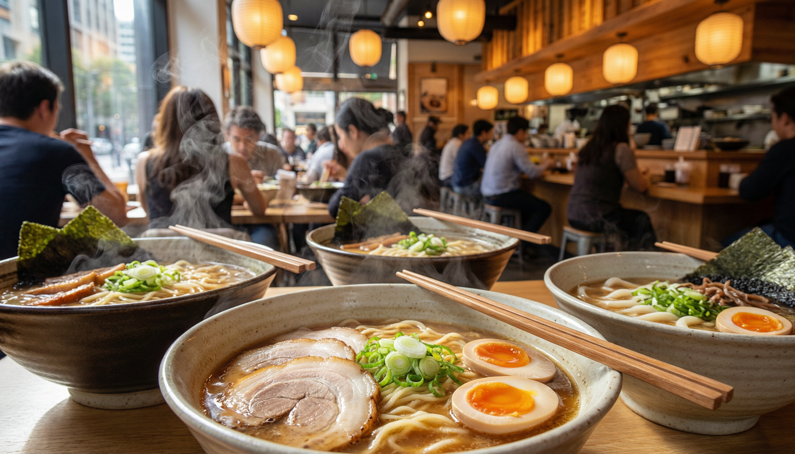
Asian Noodles ·
招牌：兰州拉面 · 日式拉面 · 韩式拌面
备选 · 按区域顺路加入
为什么值得去Perth CBD 亚洲面食区，多家中日韩面馆集中，午餐快速实惠，是市区华人常去的简餐区。
营业11:00-21:00 · ['无固定休息日']
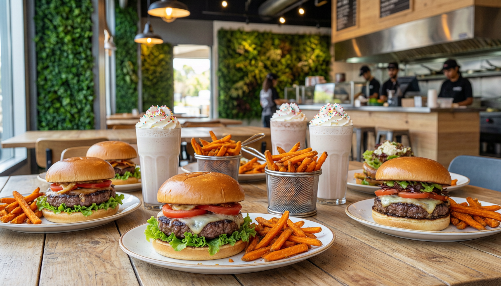
Burgers ·
招牌：Local Green Burger · Simply Grill'd · Sweet Potato Fries
备选 · 按区域顺路加入
为什么值得去澳洲健康汉堡连锁，新鲜食材和多种素食选择。Perth 市区和 Fremantle 均有分店。
营业11:00-21:00 · ['无固定休息日']
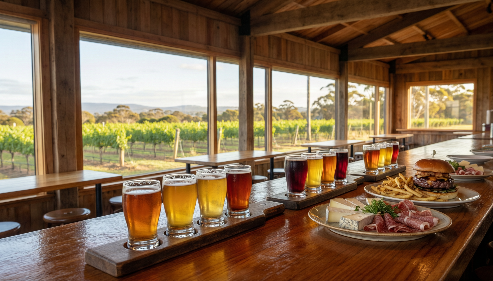
Cafe ·
招牌：Big Dome Breakfast · Flat White · Eggs Benedict
备选 · 按区域顺路加入
为什么值得去西澳本地咖啡连锁，早餐和轻食为主。Perth CBD、Fremantle 和南部地区均有分店。
营业7:00-16:00 · ['无固定休息日']
LANGUAGE COMPANION
HIGH-FREQUENCY PHRASES
Excuse me, where is...?请问...在哪里?
How do I get to...?怎么去...?
Is this the right way to...?这是去...的路吗?
How far is it?有多远?
Can you show me on the map?能在地图上指给我看吗?
Table for two, please.两位用餐。
Can I see the menu?可以看看菜单吗?
I'll have the..., please.我要...
Can we get the bill?可以买单吗?
Is tap water okay?可以喝自来水吗?
How much is this?这个多少钱?
Do you have a smaller size?有小一号的吗?
Can I try this?可以试一下吗?
Do you accept credit card?接受信用卡吗?
Is there a discount?有折扣吗?
Please call an ambulance.请叫救护车。
I need help!我需要帮助!
Where is the nearest hospital?最近的医院在哪?
I've lost my passport.我的护照丢了。
Can you call the police?可以报警吗?
Where is the toilet?洗手间在哪?
Is there a playground nearby?附近有游乐场吗?
Can my child have a smaller portion?可以给孩子来份小份的吗?
Is this child-friendly?这里适合儿童吗?
We need a high chair.我们需要儿童椅。
HIGH-FREQUENCY PHRASES
Excuse me, where is...?请问...在哪里?
How do I get to...?怎么去...?
Is this the right way to...?这是去...的路吗?
How far is it?有多远?
Can you show me on the map?能在地图上指给我看吗?
Table for two, please.两位用餐。
Can I see the menu?可以看看菜单吗?
I'll have the..., please.我要...
Can we get the bill?可以买单吗?
Is tap water okay?可以喝自来水吗?
How much is this?这个多少钱?
Do you have a smaller size?有小一号的吗?
Can I try this?可以试一下吗?
Do you accept credit card?接受信用卡吗?
Is there a discount?有折扣吗?
Please call an ambulance.请叫救护车。
I need help!我需要帮助!
Where is the nearest hospital?最近的医院在哪?
I've lost my passport.我的护照丢了。
Can you call the police?可以报警吗?
Where is the toilet?洗手间在哪?
Is there a playground nearby?附近有游乐场吗?
Can my child have a smaller portion?可以给孩子来份小份的吗?
Is this child-friendly?这里适合儿童吗?
We need a high chair.我们需要儿童椅。
LOCAL TRAVEL NOTES
珀斯9-10月为春季，日间气温约15-25°C，早晚凉爽白天温暖。偶有阵雨建议随身携带轻便雨具。
西澳紫外线指数非常高，即使阴天也需涂抹SPF50+防晒霜并戴帽子。户外活动务必做好防晒措施。
珀斯春季日落约18:00-18:30，白天日照充足。户外活动可安排到傍晚，光线柔和适合拍照。
珀斯以Fremantle Doctor海风闻名，下午海边风力较大。建议随身携带防风外套以免着凉。
澳洲小费非强制要求，餐厅通常给10%或不给。服务特别好时可酌情给予小费以示感谢。
澳洲人非常重视排队秩序，插队会被视为极不礼貌的行为。请自觉排队并耐心等待。
Quokka性格友善但严禁喂食，请保持适当距离拍照。切勿触摸或打扰任何野生动物。
请尊重原住民圣地和传统文化艺术。未经许可不要拍摄原住民人物照片以示尊重。
澳洲实行靠左行驶规则，租车需持有国际驾照。六岁以下儿童必须使用安全座椅。
珀斯公交使用SmartRider卡支付，火车连接机场与市区。Fremantle线火车非常方便。
前往Rottnest Island的渡轮需提前预订，在B Shed码头登船。航程约需三十分钟。
市区停车需收费，请注意查看路边的限时标志牌。郊区景点通常提供免费停车服务。
只在有救生员值守的海滩游泳，注意离岸流等危险。儿童应在浅水区安全戏水。
丛林徒步请穿长裤和封闭式鞋子，注意蛇和蜘蛛出没。远离野生袋鼠以免受伤。
澳洲报警火警和急救统一电话号码为000，手机也可拨打112。遇到紧急情况请立即求助。
建议每隔两小时补涂一次防晒霜，游泳后需重新涂抹。儿童应随时佩戴宽边帽。
Visa和Mastercard在澳洲被广泛接受，部分小店设有最低消费。American Express接受度较低。
大部分场所支持刷卡支付，但逛市场和小摊建议携带现金。ATM机分布广泛方便取款。
单店消费满300澳元可申请退税(Tourist Refund Scheme)。抵达机场后在TRS柜台办理退税手续。
建议出发前先兑换少量澳元以备零用，机场汇率通常较差。市区换汇点价格更优惠。
📍 今日路线图 · 总距离约 10 km
INTERACTIVE MAP
点击下方日期按钮切换路线，点击地图标记查看地点详情。司机可用此地图导航。
SUPERMARKETS
部分日子会自己做饭，以下是沿途各大超市的位置、营业时间和推荐采购日。
💡 小贴士：Woolworths 和 Coles 价格接近，ALDI 最便宜但品类少一些。Margaret River 的 Riverfresh IGA 有本地食材（蜂蜜、橄榄油、手工面包）值得试试。
CHECKLIST
勾选已完成的项目，确保出发前一切就绪。
按类别逐项勾选
按时间顺序处理真正会影响行程的事项